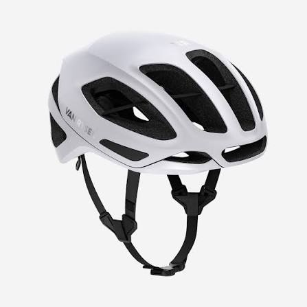
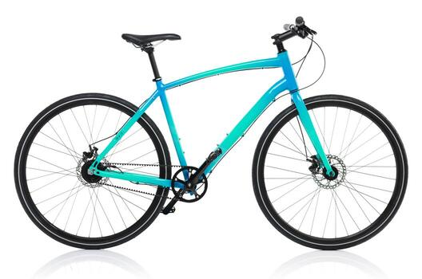

¿Quiénes somos?
- Nacimos en Medellín con la misión de transformar la movilidad urbana.
- Buscamos mejorar las experiencias de transporte y turismo sobre dos ruedas.
- Nuestros clientes y su seguridad son siempre nuestra prioridad.

Equipo de protección incluido
Las mejores rutas para recorrer

Bicicletas de alta calidad
| Bicicleta | 1 hora | Medio día (4 h) | Día completo |
|---|---|---|---|
| Urbana | $10.000 | $30.000 | $50.000 |
| Montaña | $15.000 | $45.000 | $70.000 |
| Eléctrica | $25.000 | $70.000 | $110.000 |
| Recorrido | Distancia | Duración | Nivel | Precio por persona |
|---|---|---|---|---|
| Río y Parques | 12 km | 2 h | Fácil | $45.000 |
| Sabores de Barrio | 18 km | 3 h | Medio | $60.000 |
| Reto Las Palmas | 25 km | 4 h | Difícil | $85.000 |